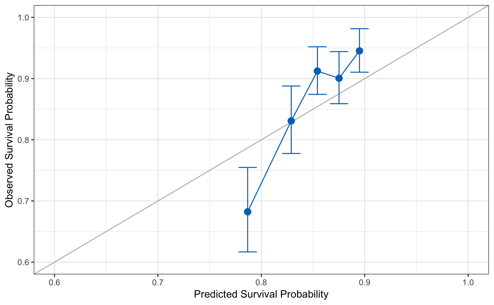

R/06-hdnom-external-calibrate.R
hdnom.external.calibrate.RdExternally Calibrate High-Dimensional Cox Models
hdnom.external.calibrate(object, x, time, event, x_new, time_new, event_new, pred.at, ngroup = 5)
| object | Model object fitted by |
|---|---|
| x | Matrix of training data used for fitting the model. |
| time | Survival time of the training data.
Must be of the same length with the number of rows as |
| event | Status indicator of the training data,
normally 0 = alive, 1 = dead.
Must be of the same length with the number of rows as |
| x_new | Matrix of predictors for the external validation data. |
| time_new | Survival time of the external validation data.
Must be of the same length with the number of rows as |
| event_new | Status indicator of the external validation data,
normally 0 = alive, 1 = dead.
Must be of the same length with the number of rows as |
| pred.at | Time point at which external calibration should take place. |
| ngroup | Number of groups to be formed for external calibration. |
library("survival") # Load imputed SMART data data(smart) # Use the first 1000 samples as training data # (the data used for internal validation) x = as.matrix(smart[, -c(1, 2)])[1:1000, ] time = smart$TEVENT[1:1000] event = smart$EVENT[1:1000] # Take the next 1000 samples as external calibration data # In practice, usually use data collected in other studies x_new = as.matrix(smart[, -c(1, 2)])[1001:2000, ] time_new = smart$TEVENT[1001:2000] event_new = smart$EVENT[1001:2000] # Fit Cox model with lasso penalty fit = hdcox.lasso( x, Surv(time, event), nfolds = 5, rule = "lambda.1se", seed = 11) # External calibration cal.ext = hdnom.external.calibrate( fit, x, time, event, x_new, time_new, event_new, pred.at = 365 * 5, ngroup = 5) print(cal.ext)#> High-Dimensional Cox Model External Calibration Object #> Model type: lasso #> Calibration time point: 1825 #> Number of groups formed for calibration: 5summary(cal.ext)#> External Calibration Summary Table #> Predicted Observed Lower 95% Upper 95% #> 1 0.7867982 0.6822816 0.6167482 0.7547785 #> 2 0.8289112 0.8308652 0.7775687 0.8878148 #> 3 0.8542307 0.9122714 0.8741931 0.9520084 #> 4 0.8751486 0.9005033 0.8589700 0.9440448 #> 5 0.8949158 0.9452770 0.9103990 0.9814912plot(cal.ext, xlim = c(0.6, 1), ylim = c(0.6, 1))